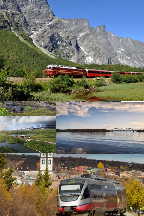

Her kan du lære hvordan du kjøper togbilletter på nett
Det er veldig mange måter å kjøpe en bussbilet på. For eksempel kan det være en app eller nettside som gir deg lett tilgang til alle slags togbilleter.
Hvordan man kjøper busbilletter på nett
Første man må gjøre for å kjøpe en billet, er å gå inn på en nettside eller lignende som selger billetter.
Her er noen eksempler, vy.no, nj.no, entur.no
▾
Hokksund -- Drammen stasjon 69kr 1 voksen. 16 minutters tur.
Hokksund -- Drammen stasjon 438kr 2 voksne, og en 17 år gammel. 52 minutters tur.
Vy.no THE RAUMA RAILWAY
The Røros Railway
De best stoppene med sørlandsbanen
Norges lengste togtur
